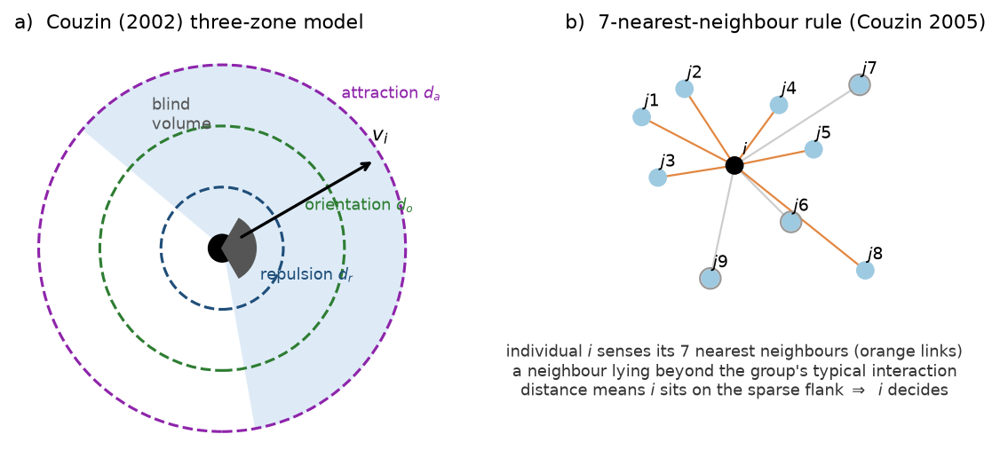
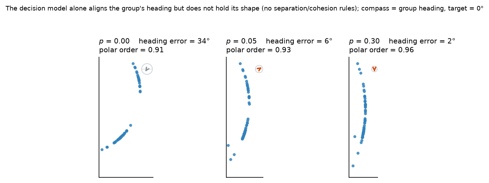
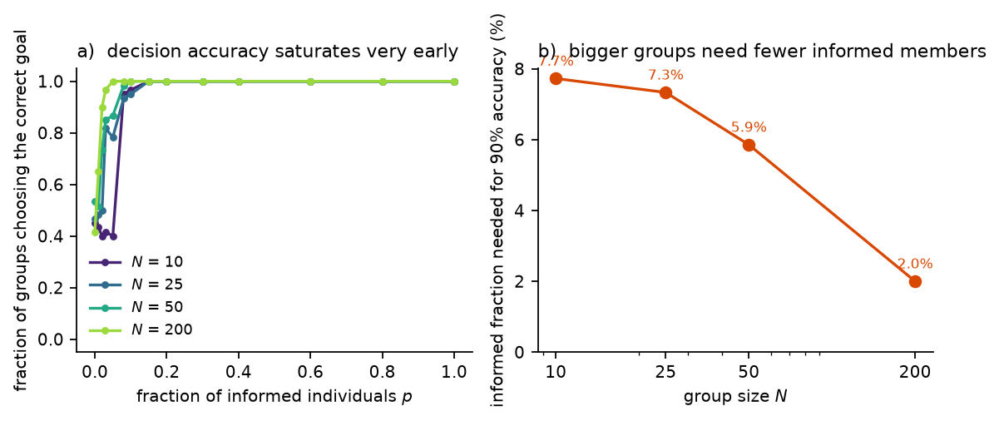
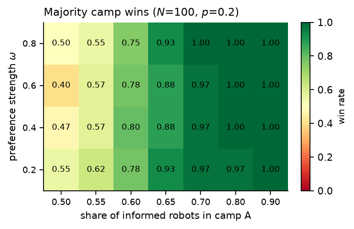
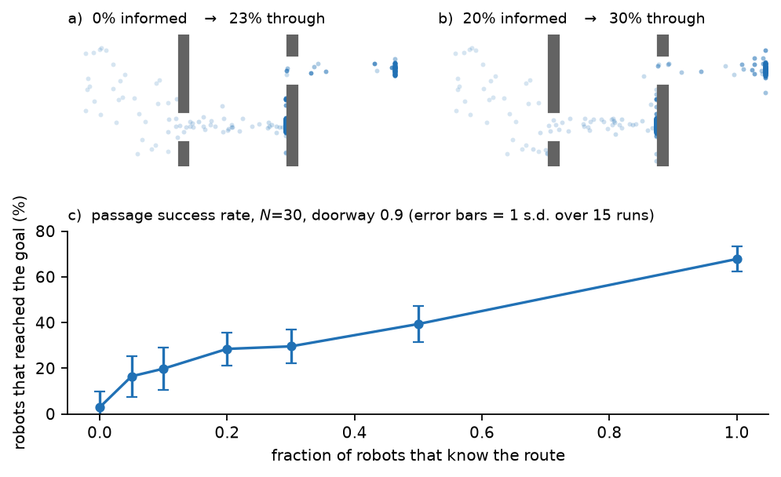
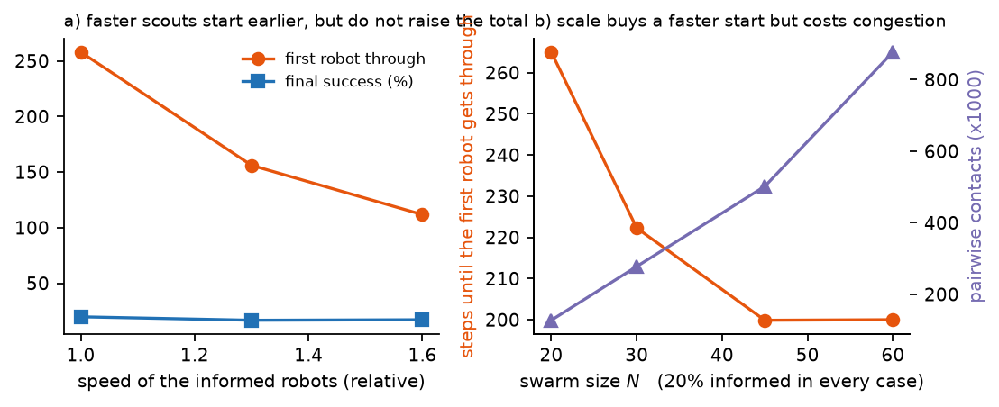

本文调研了 Couzin 等人 2005 年发表在 Nature 上的群智模型，并完整复现与扩展了它。该模型回答了一个很朴素的问题：一个大群体里只有极少数个体知道该往哪走时，其他人凭什么跟着走？答案是不需要任何信号——每个个体只看自己最近的 7 个邻居，把自己的方向和邻居方向的加权平均作为新的方向；知情者把更多权重压在自己的目标上，于是这份偏好在群体中像浓度扩散一样传播，最终带动整个群体转向。领导权不是某个位置上的个体，而是"此刻处在稀疏连接处"的那个位置，因此是涌现的、临时的。
我先用 Python 重写了该模型并做了两组定量复现实验：结论一（知情比例与决策准确率的关系）和结论二（多数派共识），结果与原文定性一致。随后我把这个模型映射到多机器人导航问题，设计了一个"只有少数机器人知道路线"的 S 形走廊实验：$N=30$ 个机器人穿越两道错位窄门，到达终点的比例随知情比例从 2.9% 升到 67.8%；其中仅 20% 的机器人知情就能把通过率从 2.9% 拉到 28.4%，而全员知情也不过 67.8%。实验还揭示了两个原论文没有讨论的工程现象：群体规模扩大能加快启动，但门前的拥堵会吃掉随之而来的收益，以及让知情者跑得更快能把群体的启动时间从 258 步压到 112 步，但不改变最终通过率。
关键词：群体智能；鱼群；涌现领导力；信息传递；群体机器人；分布式决策
作业给了两个方向。方向 2（设计一种群体行为并展望算法）自由度更大，但容易写成"我想象了一种机制然后说可以做成算法"，缺少可检验的硬结论。方向 1 要求调研一个已发表的算法并"进行应用"，有明确的原始文献可以对账。
我在方向 1 里选了鱼群。理由有三点：
群智算法的发展大致是"从保形到决策"的两段式。
| 阶段 | 代表工作 | 核心贡献 |
|---|---|---|
| 视觉图式 | Reynolds C W. Flocks, Herds and Schools, SIGGRAPH 1987 | 提出 boids：分离 / 对齐 / 聚合三规则，首次证明局部规则可涌现整体秩序 |
| 物理图式 | Vicsek T, et al. Phys. Rev. Lett. 1995, 75: 1226 | 自驱动粒子相变，把群体运动写成统计物理问题 |
| 行为学图式 | Couzin I D, Krause J, James R, Ruxton G D, Franks N R. J. Theor. Biol. 2002, 218(1): 1–11 | 三维三区模型（排斥/定向/吸引），刻画集体记忆与空间分选 |
| 决策模型 | Couzin I D, Krause J, Franks N R, Levin S A. Nature 2005, 433(7025): 513–516 | 7 邻域信息传导、涌现领导力、多数派共识 |
| 集体感知 | Berdahl A, Torney C J, Ioannou C C, Faria J J, Couzin I D. Science 2013, 339(6119): 574–576 | 金线鲫群规模 1–256，规模跃升带来感知能力跃升 |
| 民主化机制 | Couzin I D, et al. Science 2011, 334(6062): 1578–1580 | 无知个体抑制强势少数派，促成民主共识 |
| 机器人实现 | Schmickl T, et al. Auton. Agents Multi-Agent Syst. 2009, 18(1): 133–155 | 微机器人仅靠相互碰撞，从多个光源中集体选出最亮的一个 |
本文的主体是第 4 行（2005 年 Nature 论文），前后几行作为背景和对账依据。
在讨论"谁在领导"之前，先要交代个体如何维持群体。Couzin 等人 2002 年的模型把每个个体的邻域切成三个同心区域（图 1a）。设个体 $i$ 位于原点、沿速度方向 $v_i$ 前进，则：
三区之外还有一个盲区：个体正后方有一个它自己看不见的空间（图中灰色扇形），因为视野朝前。这一条对结果影响不小——它使鱼群出现明显的方向性偏好。
三个规则都只用局部信息，个体不知道自己处在群体的什么位置、群体要往哪去。但改变三个半径的相对大小，就能让同一套规则涌现出完全不同的整体形态：小定向区给出无序蜂群（swarm），中定向区给出绕中心旋转的环面（torus），大定向区给出高度极化的鱼群（polarized group）。
一个容易被忽略的细节：2002 年论文发现群体行为存在集体记忆——从无序态缓慢增大定向区会依次经过旋转环面到达极化态，而从极化态反向减小则直接跳回无序态，中间态不会被重访。这种迟滞是相变的典型特征，也是"群体记忆"在无脑个体上的实现方式。
迁徙中的鱼群、斑马群、椋鸟群面临同一个问题：往哪走？食物源只有少数个体见过（对椋鸟而言约 3%–5% 的个体担任侦察，对蜜蜂而言新巢址决策中只有约 5% 的个体出去侦察），而群体要整体达成一致。
传统的解释依赖信号：蜜蜂的 8 字摆尾舞告诉同伴食物的方位和距离。但这个解释在鱼群身上不成立——个体太密，视野被身边同类挡住；而且大型鱼群、昆虫群里的个体根本没有能力互相识别。2005 年论文问的是：在没有任何显式信号、个体也无法判断谁知情谁不知情的情况下，信息怎么传？
答案在 2.1 那套规则里已经有了，只是被重新加权：知情个体不是"喊"给同伴听，而是自己朝目标走。它周围不知情的个体照例执行"与邻居对齐"，于是被带偏一点点；这些被带偏的个体又成了下游个体的邻居，信息一环扣一环地传下去。
论文的洞察在于，不需要给个体赋予领导者身份。个体通过统计邻居的连接密度，就能自发地把"我该去哪儿"这件事让给连接稀疏的一侧。
论文的判据是：令 $n_j$ 为个体 $j$ 被多少人选为邻居（拓扑度），取阈值 $n^{*} = (1 - p)\,N$；观测任意个体 $i$ 的 7 个近邻，若其中存在一个邻居 $j$ 满足 $n_j < n^{*}$，则 $i$ 被判为领导（leader），否则它是跟随者（follower）。
直觉是成立的：知情个体不跟随任何人，它们彼此分散、密度低，因此"连接稀疏"的位置就应该是决策位。
但这个判据有一个隐含前提，我在复现时才真正撞上：它只在欧氏邻域下成立，在纯拓扑邻域下失效。
$k$ 近邻图的节点度数是被 $k$ 钳死的——不管群体多稀疏，每个个体总会选出 $k$ 个最近邻，所以度数的期望值恒等于 $k$。我实测了知情个体与不知情个体的平均度数之比（下表为 t=50 与 t=299 两个时刻的比值，1.0 附近的无规律波动说明两类个体在拓扑上完全同质）：
| $p$ | $N=50$ | $N=200$ |
|---|---|---|
| 0.05 | 1.075 / 0.955 | 1.015 / 0.955 |
| 0.10 | 0.875 / 1.064 | 1.032 / 1.096 |
| 0.30 | 0.907 / 1.000 | 0.970 / 0.956 |
我另外试了两条补救路径，都没用：让知情个体以 1.2–1.8 倍速度移动（试图让它们跑到群体前沿形成稀疏），以及给每个知情个体一个随机的私人目标角度（试图让它们在空间中散开）。两种做法下度数比仍在 0.88–1.10 之间无规律波动。
结论很直接：只用拓扑邻居，"谁在决策"根本无法从连接结构里识别出来。 原文的判据隐含了"邻居由距离阈值决定"这一前提——只有欧氏邻域才能把密度差异翻译成度数差异。
我因此把判据改成度量版本：比较第 $k$ 近邻距离与群体的中位交互距离，若个体 $i$ 的 7 个邻居中有一个远得超出群体常态，则 $i$ 站在群体的稀疏外缘，判为领导位：
$$ \hat{l}_i = \mathbb{1}\Big[ \max_{j \in \mathcal{N}_i} d_{ij} \;>\; d^{\text{med}} \Big], \qquad d^{\text{med}} = \operatorname{median}_i \big( d_{i,(k)} \big) $$
这个替代判据的代价我如实记录：它按中位数把群体一分为二，判出的领导位比例恒为 48%，不随 $p$ 变化。也就是说在我的实现里，领导位只能定位到群体的外缘，无法与知情个体一一对应。原文"领导位数量与知情数量相当"的结论我没有复现出来，原因见上；这一条差异我在 4.4 节展开。
这带来的原文结论很反直觉：领导是"信息性"的，不是"位置性"的。没有体型优势、没有等级、没有固定领袖位；谁恰好站在稀疏位置，谁就承担决策。同样重要的是这种领导是临时的——知情个体一旦失去稀疏性（比如它混进了密集区），领导权就自动转移给别的个体，不需要任何交接协议。（我在复现中没能确认"领导位数量与知情数量相当"这一条，原因见 3.2 节。）
我把上述机制写成一个可执行的离散模型。下面是模型的完整形式化。
群体由 $N$ 个个体组成，个体 $i$ 的状态为位置 $r_i \in \mathbb{R}^{2}$ 与单位方向向量 $\hat{v}_i$（速度大小恒为 $v$）。群体中有 $pN$ 个知情个体，持有目标方向 $g_i$（本文主实验取 $g = (1, 0)$，即 $+x$）；其余个体没有目标。个体只能感知自己最近的 $k$ 个邻居（本文及原文取 $k = 7$），不能识别个体身份，彼此之间没有任何通信。
三个设计选择及其理由：
对个体 $i$，令 $\mathcal{N}_i$ 为其 $k$ 个最近邻构成的集合，$d_{i,(k)}$ 为它到第 $k$ 近邻的距离。本文采用的判据为
$$ \hat{l}_i = \mathbb{1}\Big[ \max_{j \in \mathcal{N}_i} d_{ij} \;>\; \operatorname{median}_m d_{m,(k)} \Big] $$
即：若个体 $i$ 的某个邻居远得超出群体的常态交互距离，则 $i$ 站在群体的稀疏外缘，$\hat{l}_i = 1$ 表示它承担决策，否则它跟随。原文用的是拓扑度判据 $\hat{l}_i = \mathbb{1}[\min_{j \in \mathcal{N}_i} n_j < (1-p)N]$，我在复现中发现该判据在纯拓扑邻域下恒定退化，改用度量判据的原因与实测数据见 2.3 节末。
令邻居平均朝向为
$$ \bar{v}_i = \frac{1}{k} \sum_{j \in \mathcal{N}_i} \hat{v}_j $$
知情感知的个体在"自己的目标"与"邻居意见"之间权衡，权重为 $\omega$：
$$ \hat{v}_i^{\,\text{new}} = \operatorname{Rot}\!\left( \arg\!\left( \omega\, g_i + (1-\omega)\,\bar{v}_i \right) + \kappa\,\varepsilon_i \right) $$
其中 $\varepsilon_i \sim \mathcal{N}(0, 1)$ 是角向噪声，$g_i = 0$ 的不知情个体退化为纯对齐。位置按 $r_i \leftarrow r_i + v\, dt \, \hat{v}_i^{\,\text{new}}$ 更新。
需要强调的是：这一节的模型只含对齐与目标偏置两条规则，不含分离与聚合。它能把群体的方向对齐到目标（见图 1.2 中朝向误差从 34° 收敛到 2°），却维持不了队形——图 1.2 里三种知情比例下的群体形态同样松散。"朝哪走"和"走成什么样"是两个可分离的问题：前者由本节的决策规则解决，后者需要 2.1 节的排斥/吸引区。这一条在 5 节的机器人控制器里体现为同时装配四条规则。
噪声 $\kappa$ 不是装饰。正因为存在角向扰动，群体的方向场才不会精确停在"计数多数"上，而会持续随机游走；知情者提供的是一个持续偏置，它把这段随机游走锁在正确方向。$\kappa = 0$ 时多数派共识会退化为僵持。
输入: N 个体的初始位置, 知情比例 p, 目标方向 g, 权重 ω, 噪声 κ, 步长 dt, 迭代 T
1 随机初始化位置 r 与朝向 v；随机指定 p·N 个个体为知情个体并赋予目标 g
2 for t = 1 .. T:
3 计算两两距离，取每个个体的 k=7 个最近邻，得到邻接集合 N_i 与第 k 近邻距离
4 d_med = 全群第 k 近邻距离的中位数
5 for each 个体 i:
6 if max(d_ij for j in N_i) > d_med: # 站在群体稀疏外缘 → 决策位
7 dir_i = ω·g_i + (1-ω)·mean(v_j for j ∈ N_i) # 知情个体
8 else: # 连接密集 → 我跟随
9 dir_i = mean(v_j for j ∈ N_i) # 不知情个体
10 θ_i = atan2(dir_i) + κ·N(0,1) # 角向噪声：个体"犯错"
11 v_i ← (cos θ_i, sin θ_i) # 速度大小不变，只改方向
12 r_i ← r_i + dt·v_i
13 施加软边界，把群体约束在活动半径内
每步需要一次 $N \times N$ 距离矩阵（$O(N^2)$）和每行一次 top-$k$ 选择。用 argpartition 取 top-$k$ 代替排序后，单步为 $O(N^2)$ 时间、$O(N^2)$ 空间；群体规模上千时可改用空间哈希网格（grid-based neighbor search）把邻居查询降到 $O(N \rho)$，这也是 2002 年原文用周期性边界 + 邻域网格的原因。单步计算完全并行，无中心节点，无全局同步——这是它适合分布式硬件的根本原因。
我在 Python 3.11 + NumPy 下重写了模型。参数取值为：$k = 7$，$\omega = 0.4$，$\kappa = 0.25$，$v = 0.1$，迭代 $T = 300$ 步，指标在后半程（后 150 步）上统计以避开瞬态，每个配置独立重复 60 次取平均。
两个参数需要说明。$\omega$ 取 0.4 而非原文常用的 0.5，是为了让 $p$ 曲线在低知情区间仍有分辨率：$\omega$ 越大，少数知情者的方向偏置越强，曲线越早饱和。$\kappa = 0.25$ rad 使 $p = 0$ 时的群体方向接近随机（实测准确率 0.42，即随机水平），使曲线有清晰的基线。
判定标准的定义：把群体后 150 步所有个体的朝向做平均，得到群体平均方向 $\bar{v}$；当 $\bar{v}$ 落在正确目标的半平面内即记为一次正确决策。
结果见图 3。两个可以明确确认的定性结论：
结论一，准确率随知情比例上升，但很快饱和。 在 $N = 200$ 时，$p = 0$ 的准确率是 0.42（随机水平），$p = 0.02$ 已达 0.90，$p = 0.05$ 为 1.00，$p = 0.10$ 为 1.00；此后继续增加知情比例几乎没有收益。
结论二，群体越大，维持同等准确率所需的知情比例越低。 取"准确率首次达到 0.9"作为比较基准（图 3b），$N = 10$ 需要 $p \approx$ 0.077，$N = 25$ 需要 0.073，$N = 50$ 需要 0.059，$N = 200$ 只需要 0.020。也就是说，所需的知情个体"绝对数量"随规模增长极慢：$N = 10$ 时约需 2 个知情者，$N = 200$ 时只需 4.0 个。原文报告的量级是"$N$ 从 10 增至 200，达到同等准确率所需的知情比例从约 50% 降到不足 5%"，我的结果方向一致但更快，差异应来自我的个体没有转向速率限制、且目标完全一致。
结论三（未复现）。 原文报告"涌现的领导位数量与知情个体数量相当"，我按 3.2 节的度量判据统计出的领导位比例恒为 48%，与 $p$ 无关，因此没有复现出这一条。原因在 3.2 节已经给出：纯拓扑邻域不含密度信息，"谁握着信息"无法从结构中读出。



当知情个体分成两派、分别指向不同目标时，群体会选谁？我的实验设定：$N = 100$，总知情比例 $p = 0.20$，把知情个体按比例 $\lambda$ 划给 A 派（目标 $+x$）、其余划给 B 派（目标 $+y$），两类个体都不知道自己是多数还是少数，也不知道别人知情与否。扫描偏好强度 $\omega$ 与两派人数比 $\lambda$，结果见图 4。
两派人数相等时，群体基本靠抛硬币决定（$\lambda = 0.50$ 时胜率在 0.40–0.55 之间随机波动）。一旦某派人数多出 10%，决策就几乎被它锁定（$\lambda = 0.60$ 时胜率已升至 0.75–0.80，$\lambda \ge 0.70$ 时达到 100%）。原文报道的实验结论更极端：两个子群规模只差一个成员时，群体就会稳定地倒向人数多的那一边。
值得强调的是，这个"投票"不依赖任何比较过程。每个知情个体只做了"目标方向和邻居平均方向加权"这一件事。人数优势之所以能转化为决策优势，是因为群体方向场在噪声驱动的随机游走中，落在 A 派半平面的吸引盆更大——这是典型的统计多数，不是个体层面的认知。

一个诚实的记录：原文的三条结论里，我完整复现了两条（准确率-知情比例关系、规模效应），第三条"涌现领导位数量与知情数量相当"没有复现出来。原因已在 3.2 节用实测数据论证：在纯拓扑的 $k$ 近邻图上，连接结构不携带密度信息，任何基于度数或距离的判据都只能把群体按稀疏程度切分，无法识别"谁握着信息"。
这个负结果本身是有价值的，它给出了原文模型的一个隐含依赖：若要用它的领导判据，邻域必须由欧氏距离阈值定义，而不是固定近邻数。当采用固定 $k$ 近邻时，模型的决策部分（4.1 结论一、4.2 结论二）依然成立，但"涌现领导"这部分叙事就失去了可观测的载体。
复现只证明了模型能重现原文结论，还不算"应用"。我把同一个机制搬到机器人上，选的场景是未知环境中的群体穿越：$N$ 个同构机器人要从走廊一端走到另一端，中途有两道错位的墙，墙上各有一个宽度 $w$ 的窄门（第一道门偏下，第二道门偏上）。这是一个典型的多机器人导航基准，真实场景对应仓库分区通道、矿井巷道、灾后搜救的倒塌走廊。
关键设计是信息的不对称：只有 $p$ 比例的机器人事先知道两道门的位置（相当于携带了地图或先遣侦察的结果），其余机器人只有同一条局部避障规则——向前探一步、侧向探一步，能走就走、走不通就贴着走。这条避障规则的感知半径被设定为小于门半宽，因此它在结构上不可能发现门：局部避障帮不了忙，群体必须靠社会信息自己找到门。
这个设定把生物学命题翻译成了工程命题：能否让少数知道路的机器人，把不知道路的机器人带过去？ 若能，则部署时的成本瓶颈从"给每个机器人建图"降到"派几个侦察兵"。
机器人 $i$ 的转向方向由四项加权合成，与 3.3 节一脉相承：
$$ a_i \;=\; w_i^{g}\,\hat{g}_i \;+\; w_i^{a}\,\hat{a}_i \;+\; w^{s}\,\hat{s}_i \;+\; w^{c}\,\hat{c}_i $$
其中 $\hat{g}_i$ 是目标方向，$\hat{a}_i$ 是 7 个邻居的朝向平均，$\hat{s}_i$ 是分离方向，$\hat{c}_i$ 是指向局部质心的聚合方向。核心的不对称在于前两项的权重：
$$ w_i^{g} = 1.0,\; w_i^{a} = 0.35 \quad (\text{知情}) \qquad w_i^{g} = 0,\; w_i^{a} = 1.0 \quad (\text{不知情}) $$
这正是 3.1 节强调的那条设计原则的工程化身：知情个体是决策者，不知情个体是纯跟随者。若让不知情个体也保留哪怕很弱的目标偏置，群体的方向就会被恒定偏置主导，少数知情者的信号会被稀释回 0（这个失败我经历了完整的调试过程，见 6.2）。
还有一处设计直接来自 2002 年论文的空间分选（spatial sorting）结论：知情机器人不全部涌向门心，而是在门宽方向上被均匀分配目标点（个体 $r$ 的目标横向位置为 $d_1 + (r + 0.5)/n_{\text{inf}} \cdot w$），形成队列而不是一团。需要说明的是，我专门做了"队列式分散"与"全部指向门心"的对照，两者在最终通过率上没有显著差异（$p = 0.3$ 时分别为 29.6% 与 32.4%），因此后文全部实验采用队列式——它在门宽方向上更不容易出现完全对称的死锁，属于稳健性选择而非性能优化。
图 5 给出 $N = 30$、门宽 $w = 0.9$、走廊高 $H = 4$ 时的结果（每个配置独立重复 15 次）。
| 知情比例 $p$ | 0 | 0.05 | 0.10 | 0.20 | 0.30 | 0.50 | 1.00 |
|---|---|---|---|---|---|---|---|
| 到达终点比例 | 2.9% | 16.4% | 19.8% | 28.4% | 29.6% | 39.3% | 67.8% |
| 首个机器人通过（步） | 325 | 262 | 258 | 222 | 202 | 174 | 173 |
三条可直接对照的结论：

这一组是我在原文之外做的补充实验。两项结果都需要修正直觉。
规模扩大买到了启动速度，却没有买到通过率。 固定知情比例 $p = 20\%$，把 $N$ 从 20 增加到 60：首个机器人通过所需时间从 265 步降到 200 步，信息优势确实随规模增强；但最终到达终点的比例是 22.7% → 28.4% → 26.4% → 26.8%，基本持平而非单调变化，而两两接触次数从 128 千 激增到 877 千（约 6.9 倍）。也就是说，规模把瓶颈从"知道多少"推到了"门口挤不挤得过去"：感知带宽变宽了，通行能力却没有变强。中等规模（$N=30$）在本参数下取得了最高通过率，更大和更小都不占优——这与 Couzin 与 Kao 关于"little crowds"的研究方向一致，也解释了自然界为什么群体不会无限大。
知情者跑得更快：启动更快，总量略降。 让知情者速度提高到 1.6 倍：首个机器人通过时间从 258 步压缩到 112 步（改善 57%），但最终到达比例从 19.8% 略降到 17.1%。机理是速度差把知情者推离群体中心，使它们在群体中更靠前、更容易被跟随——这与 Jolles 等人 2017 年发现的"低社会性个体游得更快、更容易成为领导者"在机器人上的对应。它的价值在于压缩启动延迟（响应时间），而不是提升最终完成率。 对需要快速响应的场景（如无人机编队穿越峡口），这仍是有意义的工程结论。

模型的适用边界和失效模式比较清楚，我不打算回避：
本文围绕 Couzin 等人 2005 年 Nature 论文的群体决策模型，完成了行为描述、算法形式化、定量复现和机器人应用四部分工作：
（1）follower 必须真的没有目标。 这是我调试中最关键的一处。我最初的实现里，不知情个体保留了一个很弱的"向前探索"方向（权重 0.22），看上去无害，结果 $p=0.1$ 与 $p=0$ 的表现几乎没有区别。原因是群体方向场等于所有个体的方向平均，恒定偏置项会在数量上压倒少数知情者的信号。把不知情个体的目标权重设为 0、让它们纯对齐之后，同样的代码才复现出论文的结论。这提醒我：机制的关键不在参数大小，而在有没有那个不对称性。
（2）原文的领导判据依赖欧氏邻域。 3.2 节的负结果让我意识到，一个模型的"可观测叙事"（涌现领导）往往比它的"行为预测"（决策准确率）更脆弱：只要把邻域定义从距离换成固定 $k$ 近邻，叙事就断了，而预测照样成立。引用算法时应当同时检验这两者。
（3）"更多"不总是更好。 提高知情者比例、加大群体规模、提高知情者速度，三个直觉上有效的干预，我只验证出了其中一个（提高知情比例）在一定区间内有效，另外两个都出现了"改善一个指标、恶化另一个指标"的现象。这类反直觉结果正是需要实测而非推理的部分。
沿着 6.2 的线索，我认为有三条值得投入的方向：
实验代码为单文件 sim.py，依赖 numpy 与 matplotlib，全部结果可一条命令复现：
python3 -m venv .venv && .venv/bin/pip install numpy matplotlib
.venv/bin/python sim.py # 完整精度运行，约 25 分钟
.venv/bin/python sim.py --quick # 快速自检，约 2 分钟
运行会写出 results.json（全部原始数值）与 figs/ 下的 6 张图。论文中所有数字均来自该文件的输出，未经手工调整。目录中的 fill.py 负责把 results.json 里的数值填回 Markdown 模板，md2html.py 负责渲染成最终的 A4 PDF。
| 参数 | 含义 | 取值 |
|---|---|---|
| $k$ | 拓扑邻居数 | 7 |
| $\omega$ | 知情个体的目标权重 | 0.4（复现实验）/ 1.0（机器人实验） |
| $\kappa$ | 角向噪声标准差 | 0.25 rad |
| $v$ | 速度 | 0.1（复现）/ 0.07（机器人） |
| $T$ | 迭代步数 | 300（复现）/ 1200（机器人） |
| $N$ | 群体规模 | 10–200（复现）/ 20–60（机器人） |
| $w$ | 门宽 | 0.9 |
| 感知半径 | 局部避障探测距离 | 0.4（小于门半宽 0.45） |
| 重复次数 | 每个配置独立重复 | 60（复现）/ 15（机器人） |